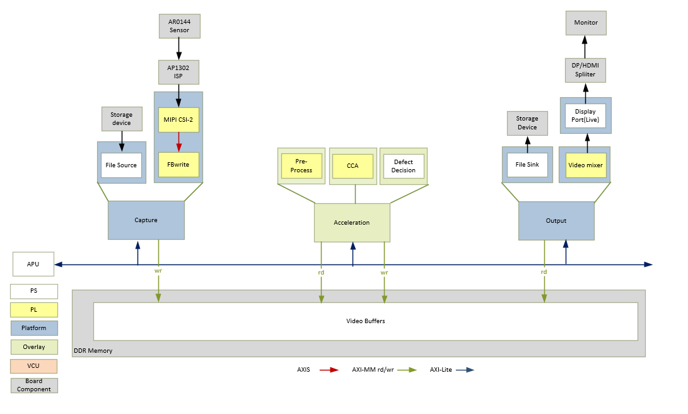

Kria™ KV260 Vision AI Starter Kit Defect Detection Tutorial |
Design Overview |
Design Overview¶
Introduction¶
Mango, known as the king of fruits, is an essential product that graces many a kitchen. This juicy delicacy is processed into many forms such as pulp, drinks, jams, pickles, and many more tasty products. The Statistia website estimates that about 52 million metric tons of mangoes are produced each year globally, and that production rises each year. A large percentage of mangoes are exported, bringing in a considerable influx of foreign exchange.
Given the importance of the mango in both household and export contexts, it is vital that each mango be without a single blemish of any kind. Due to the large volumes of mangoes produced, it is practically impossible to manually examine each mango for defects. An automated way of marking defects is the need of the hour.
The Defect Detection application uses Vitis Vision libraries to examine each mango and mark its defects. This helps farmers sell their best mangoes to bring in enhanced revenue, and results in a win-win situation for both the farmers and the consumers.
Get on with the times! Use the Xilinx automated Defect Detection application to select the best for those demanding, discerning customers.
Defect Detection Application¶
This is a getting started document for Defect Detection Accelerated Application developed on Xilinx SOM embedded platform. This document covers various components such as Hardware, Software, Design, Test Environment and more.
The SOM platform is a computer vision application platform that is capable of sourcing input data from a file, accelerating the core application algorithm in hardware, and then sending the output to DP/HDMI-Tx/File.
The following table lists the specific hardware (SOM + Carrier card) and the associated peripherals used in the Defect Detection accelerated application.
| HW Component | Definition |
|---|---|
| SOM-K26 | K26 SOM with Zynq® UltraScale+™ MPSoC |
| Carrier Card (CC)-KV260 | The board that the SOM is plugged into is called the Carrier Card |
| ____ |
The Defect Detection reference design has the following pipelines:
Capture Pipeline – Capture images of mangoes from the file.
Acceleration Pipeline:
Pre-Process Pipeline – Pre-Process received images as required for the processing function.
CCA Pipeline – The implemented Connected Component Analysis (CCA), is a custom solution to find the defective pixels in the problem object. This algorithm considers few assumptions that the background must be easily separable from the foreground object.
Defect Decision Pipeline - The output of the CCA plugin is fed into the Defect Decision block that determines the defect density and decides the quality of the mango.
Display Pipelines – Display detection results and images of the mango at various stages.
The following figure shows the various pipelines supported by the design.

The application processing unit (APU) in the Processing System (PS) consists of four ARM Cortex-A53 cores and is configured to run in symmetric multi-processing (SMP) Linux mode in the design. The application running on Linux is responsible for configuring and controlling the video pipeline and accelerators using Jupyter notebooks or the application. The following figure shows the software state after the boot process has completed and the individual applications have been started on the APU. Details are described in the Software Architecture document.
The APU application controls the following video data paths implemented in a combination of the PS and PL:
Capture pipeline capturing video frames into DDR memory from
A file on a storage device such as an SD card
An image sensor connected via MIPI CSI-2 Rx through the PL
An output pipeline reads video frames from memory and sends the frames to a sink.
The sink is a display/file storage.
The DP controller subsystem in the PS is coupled to the STDP4320 De-multiplexer on the carrier card. STDP4320 consists of dual mode output ports configured as DP/HDMI.
Key Features of the Defect Detection Application¶
The Defect Detection application detects defects in a mango. The application supports file-based use cases.
File-based usage accepts the input GRAY8 file (Y8 format) and returns three outputs in GRAY8 format.
For the live use case, connect the AR0144 sensor to capture 1280x800@60fps GRAY8 data. The application processes this data and sends the outputs to the display.
Note: The Y8 file is playable using a YUV player. As the Y8 file is a raw file, you may need to drag and drop the file to the player of your choice, and set the proper size (width=1280, height=800) and use Y color format.
The output can come from any of the following stages of processing:
Stage 1 of the output belongs to input GRAY8 data
Stage 2 of the output belongs to pre-processed pipeline
Stage 3 of the output belongs to the final stage defect detection pipeline
Various Components Used in this Application¶
Tools
Xilinx Tools
Vitis™: 2022.1
Vivado™ tool: 2022.1
Hardware
Hardware Components
Target platforms and extensions
Kria™ KV260 Vision AI Starter Kit including:
On Semi AP1302 Image Signal Processor on the carrier card
DP splitter on the carrier card
Hardware interfaces and IP
Video Inputs
File
MIPI CSI-2 RX
Video Outputs
File
DisplayPort/HDMI
Auxiliary Peripherals
QSPI
SD
I2C
UART
Ethernet
General-purpose I/O (GPIO)
Software
Software Components
Video Processing: Vitis Vision library accelerator functions
Operating System
APU: SMP Linux
Linux Kernel Subsystems
Video Source: Video4 Linux (V4L2)
Display: Direct Rendering Manager (DRM)/Kernel Mode Setting (KMS)
Linux User Space Frameworks
Jupyter Notebook
GStreamer / Xilinx VVAS
Xilinx runtime (XRT)
Next Steps¶
References¶
Kria KV260 Vision AI Starter Kit User Guide (UG1089
Kria SOM Carrier Card Design Guide (UG1091)
Kria KV260 Vision AI Starter Kit Data Sheet(DS986
Kria K26 SOM Data Sheet(DS987)
License¶
Licensed under the Apache License, Version 2.0 (the “License”); you may not use this file except in compliance with the License.
You may obtain a copy of the License at http://www.apache.org/licenses/LICENSE-2.0
Unless required by applicable law or agreed to in writing, software distributed under the License is distributed on an “AS IS” BASIS, WITHOUT WARRANTIES OR CONDITIONS OF ANY KIND, either express or implied. See the License for the specific language governing permissions and limitations under the License.
Copyright© 2021 Xilinx